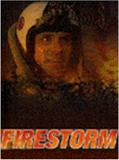
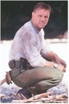
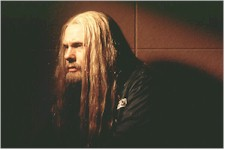

Contents | Features | Reviews | News | Archives | Store |
 |
|
| Movie Credits | Buy It! |
Firestorm
Review by Elias Savada
Posted 9 January 1998
|  | Directed by Dean Semler Starring
Howie Long, Scott Glenn, Screenplay by Chris Soth |
This film isn't apt to light your fire and it's doubtful it will ignite much action at the box-office. It's unfortunate that Fox NFL Sunday co-host, former football pro, and fledgling actor Howie Long choose as his first starring vehicle this tame (dare I say lame) action piece set around the heroic exploits of smokejumpers – "the men and women who parachute into forest fires when all other accesses are unavailable." Long made a memorable debut in John Woo's Broken Arrow and Firestorm is the first of three films under a multi-picture deal with Twentieth Century-Fox. He ain't no Steven Seagal, at least not yet. And Arnold Schwarzenegger toiled away before hitting paydirt with The Terminator, so there is hope for Long. Just as he was very competently directed as John Travolta's right hand in his first film, now former director-of-photography turned director Dean Semler can't seem to provide Long any dimension. Semler may be an Academy Award-winning cinematographer (for Dances with Wolves), but he can't seem to bring any excitement to Chris Soth's original screenplay, which is no more than a prison break flick set against one of nature's more destructive elements. Soth rehashes familiar themes in this his first produced script, which served as his thesis at the USC School of Cinema-Television. His college professor, Joseph Loeb III, must have liked it enough, as Loeb and partner Matthew Weisman brokered the project on the student's behalf. According to the film's press material, the third sentence describing Soth reads "He also toiled as a comedian and magician on cruise lines." Hmmm, he may want to head back to the love boat unless he can tighten up his writing skills.
So we have affable and fearless ex-Pro Bowl jock Long featured as affable and fearless Jesse Graves, a smokejumper who likes to fight the flames and take on any raging fire as a personal quest for the holy grail. His mentor is Wynt Perkins, a poorly defined role of another skydiving fire fighter filled by Scott Glenn. He pretty much mopes around after an opening credit rescue (a small girl and her cute puppy conveniently and moronically left behind by weeping parents!) leaves him hobbled and ripe for retirement. He's done much better work with much better material (i.e., Silence of the Lambs, The Right Stuff, Backdraft, and last year's Absolute Power). Add to the mix ornithologist Jennifer, the damsel in the dress (Suzy Amis, most recently seen fleetingly in Titanic) and Randall Alexander "Earl" Shaye (William Forsythe), the bad-ass Hannibal Lecter who masterminds his escape from the Wyoming State Penitentiary.
Shaye – a cross between the local bad boy Forsythe played in Out for Justice (1991) and his Al Capone in the TV series The Untouchables – is eager to start spending the $37 million he is in the slammer for heisting several years earlier. This sociopath, responsible for 17 deaths in his robbery, offers to share his hidden wealth with five other incarcerated foul-ups (a big blond pro wrestler, a "shy" rapist, etc.) who assist with his entry back into society through the convenience of the busload of convicts used by the state in digging trenches alongside the fire fighters. About every ten minutes or so, the fire gets closer and Shaye contrives the death of one of his cohorts as their usefulness in his grand plan lessens. The ever-diminishing dimwits don't have a clue that their socially impaired leader is offing their buddies ("Gee, he musta slipped off the ledge" or "Gee, Jesse musta killed him.") as they chase Jennifer and Jesse, who have knowledge of their escape plans. The film's pretty much a clueless mess. This Baywatch of the woods has one running joke about a dropped Pulaski (a big mother of an axe) that's always just missing scalping Jesse. Once was enough, three times and it falls flat, although the dropped tool becomes the weapon of choice during the film's climax, set against an impeding firestorm. Yeah, that's when the effects slip into high gear to show off two ferocious fire storms creating a massive inferno. It causes all oxygen to be sucked out the air. Other things suck with this film, too. Not too impressive as effects go, unless you're a fire buff.
It's pretty much Long's ball game here and while he doesn't fumble the pigskin, er pulaski, away, he gets no help from his coaching staff. Thank goodness it's a short film (less than 90 minutes, with a slight "Carrie"-esque overtime). This week's fire will undoubtedly be drowned out by next week's Hard Rain.
Contents | Features | Reviews | News | Archives | Store
Copyright © 1999 by Nitrate Productions, Inc. All Rights Reserved.